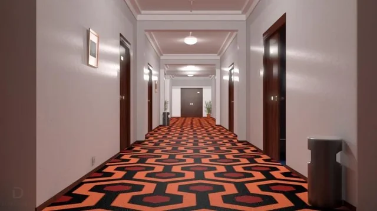

Kenopsia no Cinema
O Show de Truman (1998)
Truman Burbank vive uma vida aparentemente normal, sem saber que toda sua existência é um reality show televisionado para o mundo inteiro.
O filme transmite kenopsia através da falsa normalidade da cidade de Seahaven. Tudo é artificialmente perfeito, mas há um estranho vazio em certos momentos, especialmente quando Truman percebe que algo está errado.
Viveiro (2019)
Um jovem casal fica preso em um bairro suburbano estranho, onde todas as casas são idênticas. Eles tentam escapar, mas são forçados a enfrentar uma série de eventos desconcertantes e surrealistas.
A constante sensação de estar em um lugar artificial e sem vida cria um vazio desconfortante e inquietante, como se o ambiente estivesse congelado no tempo.
O Iluminado (1980)
Um escritor aceita um emprego de zelador em um hotel isolado durante o inverno. Com o tempo, ele começa a perder a sanidade, influenciado por forças sobrenaturais que habitam o lugar.

O vasto vazio dos corredores e a solidão do lugar aumentam a sensação de desconexão e desorientação, criando uma atmosfera de medo e abandono, como se o espaço estivesse à espera de algo que nunca chega.